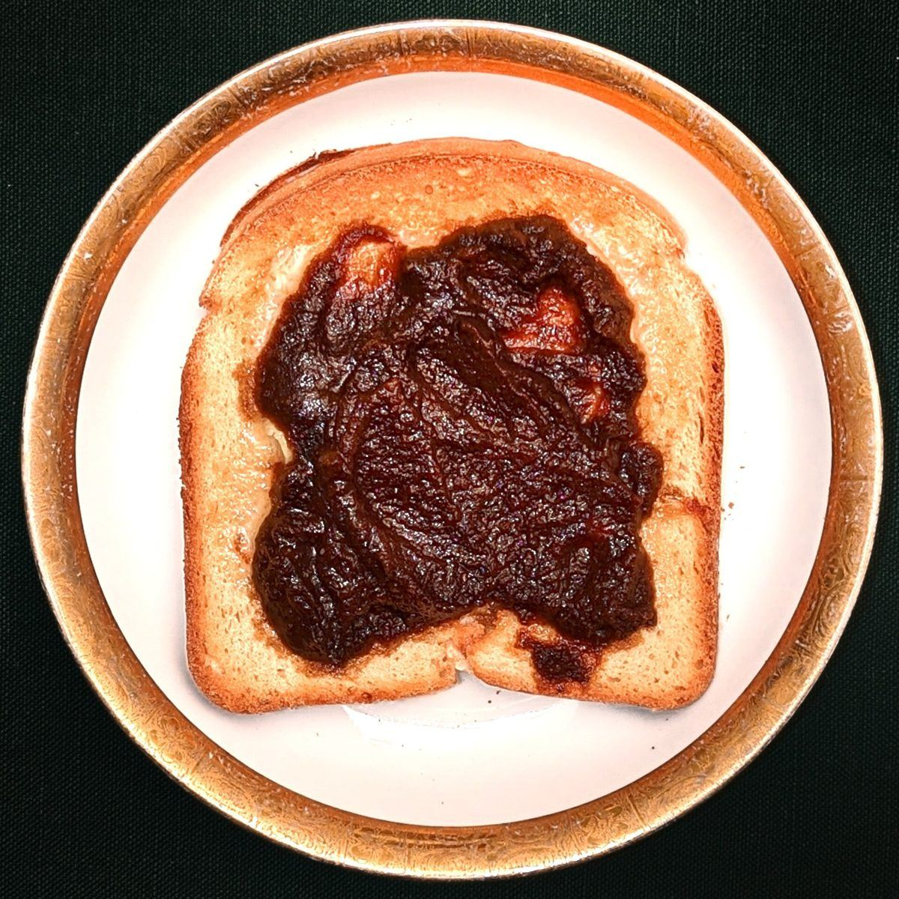

店のこと
ペーパーナイフの部位の配置図
お店の詳しい情報は準備中です。ここでは、制作側が考えたデザインの考え方を紹介します。


制作側の連想
番号は、部位の番号
ホームの図にある1〜6の番号は、それぞれペーパーナイフの部位の名前に対応します。ペーパーナイフの部位を図にしたもので、制作側の連想です。お店の理念・由来とは無関係で、実際の製品の仕様を示すものでもありません。
1切っ先
先端の丸みを帯びた部分で、封筒の口のすき間に差し入れるところ。
2刃
平たく薄い本体の部分で、紙を傷めないよう、鋭い切れ味は持たせない。
3背
刃とは反対側の、厚みのある辺。指を添えて、押さえる向きを決める部分。
4つば
刃と柄の境目にある金具で、指が刃のほうへ滑らないようにする部分。
5柄
手で握る部分で、指がかかるよう細い溝をつけた形もある。
6柄頭
柄の端のふくらみで、吊るすための小さな穴をあけた形もある。
写真(イメージ)
写真(イメージ)



写真はイメージです。お店のものではありません。
確認できていること
お店の情報
| 屋号 | Detox cafe felicidad |
|---|---|
| 所在地 | 〒901-0304 沖縄県糸満市西川町３５−１０ |
| SNS | Instagram @detoxcafefelicidad |
| そのほか | 準備中 |